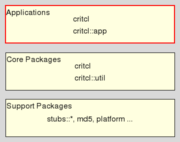

critcl_application_package - CriTcl Application Package Reference
Be welcome to the C Runtime In Tcl (short: CriTcl), a system for embedding and using C code from within Tcl scripts.
This document is the reference manpage for the critcl::app package. Its intended audience are developers working on critcl's internals. These commands are not needed to simply write a CriTcl script. If you are in need of an overview of the whole system instead, please go and read the Introduction To CriTcl.
This package resides in the Application Layer of CriTcl.

, implementing the functionality of the CriTcl Application, and through this, the mode generate package. The actual application is (only) a shim wrapping around this package. It itself is build on top of the core package critcl.
The package exports a single command
The commandline is a list of zero or more options followed by zero or more CriTcl script files. By default, the CriTcl script files are build and the results cached. This cuts down on the time needed to load the package. The last occurrence of -pkg and -tea, if provided, selects the corresponding alternative mode of operations. For a larger set of examples please see section "Building CriTcl Packages" in the document about Using CriTcl.
The options are:
The following options are understood:
CriTcl can be used in three different modes of operation, called
Compile & Run, and
Generate TEA Package
Compile & Run was the original mode and is the default for critcl_pkg. Collects the C fragments from the CriTcl script, builds them as needed, and caches the results to improve load times later.
The second mode, Generate Package, was introduced to enable the creation of (prebuilt) deliverable packages which do not depend on the existence of a build system, i.e. C compiler, on the target machine. This was originally done through the experimental Critbind tool, and is now handled by the CriTcl Application, also named critcl.
Newly introduced with CriTcl version 3 is Generate TEA Package. This mode constructs a directory hierarchy from the package which can later be built like a regular TEA package, i.e. using
.../configure --prefix ... make all isntall
Packages generated by critcl have the following basic structure:
<TOP> +- pkgIndex.tcl +- critcl-rt.tcl +- license.terms (optional) | +- tcl (optional) | +- <tsources files> | +- <platform> +- <shared library>
Notes
The file "pkgIndex.tcl" is the standard package index file expected by Tcl's package management. It is sourced during a search for packages, and declares the package to Tcl with its files, and how to handle them.
The file "critcl-rt.tcl" is a helper file containing the common code used by "pkgIndex.tcl" to perform its tasks.
The file "license.terms" is optional and appears only if the ".critcl" file the package is generated from used the command critcl::license to declare package author and license.
All files declared with the command critcl::tsources are put into the sub-directory "tcl".
The shared library generated by critcl is put into a platform-specific sub-directory.
The whole structure, and especially the last point, enable us to later merge the results (for the same package, and version) for multiple target platforms into a single directory structure without conflict, by simply copying the top directories over each other. The only files which can conflict are in the <TOP> and "tcl" directories, and for these we know that they are identical across targets. The result of such a merge would look like:
<TOP> +- pkgIndex.tcl +- critcl-rt.tcl +- license.terms (optional) | +- tcl (optional) | +- <tsources files> | +- <platform1> | +- <shared library1> +- <platform2> | +- <shared library2> ... +- <platformN> +- <shared libraryN>
Jean Claude Wippler, Steve Landers, Andreas Kupries
This document, and the package it describes, will undoubtedly contain bugs and other problems. Please report them at https://github.com/andreas-kupries/critcl/issues. Ideas for enhancements you may have for either package, application, and/or the documentation are also very welcome and should be reported at https://github.com/andreas-kupries/critcl/issues as well.
C code, Embedded C Code, calling C code from Tcl, code generator, compile & run, compiler, dynamic code generation, dynamic compilation, generate package, linker, on demand compilation, on-the-fly compilation
Glueing/Embedded C code
Copyright © Jean-Claude Wippler
Copyright © Steve Landers
Copyright © 2011-2024 Andreas Kupries